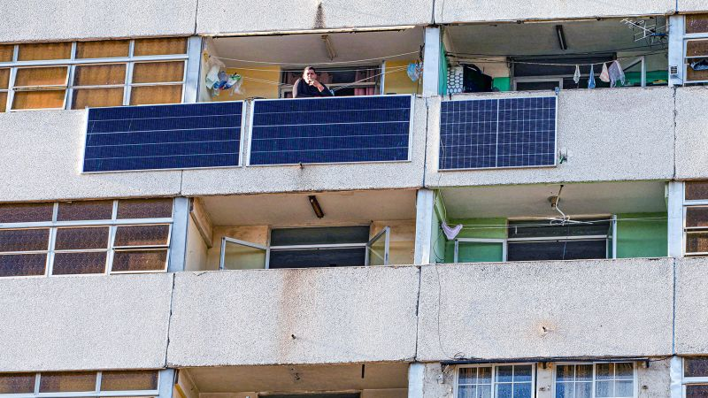
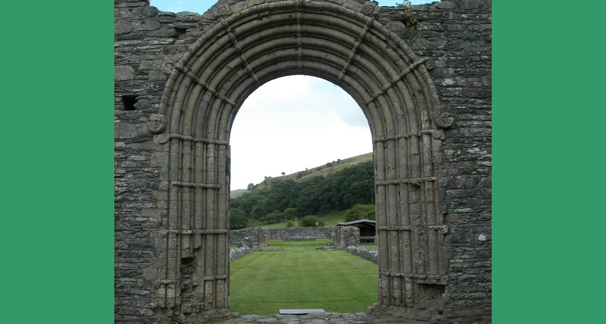

Five small reasons the week ends a little kinder than it began.
curated by Chintu 🐄vol. iii · issue lvread · don't doomscroll
Specimen № 01 · Lead
Lead — Energy & geopolitics
As Washington starves it of oil, Cuba is sprinting through one of the planet's fastest solar revolutions — with quiet help from Beijing.
Rolling blackouts forced the issue. Chinese panels and modular plants are filling in faster than the embargo can squeeze.

specimen · lead
For most of the last year Havana's grid wheezed through 12-hour blackouts, a slow collapse engineered by tightening U.S. sanctions and crumbling Venezuelan fuel shipments. Then, almost without announcement, fields of new photovoltaic arrays began winking on across the island.
Most of the kit is Chinese — panels, inverters, mounting frames trucked from port to province — and a constellation of small plants is now producing on the order of a gigawatt of new daytime supply. It is not a miracle, and it does not cool the houses at night. But for the first time in a generation, more Cubans woke up this week to working refrigerators than they did last week.
A sanctions regime designed to break Cuba's energy mix may have accidentally built the case study for fast, cheap, distributed solar — the kind that doesn't need pipelines or diplomats.
A small trial reports stem cell infusions reversing the kind of stroke damage neurology textbooks still call permanent.
Researchers report measurable recovery of motor function in patients months after their strokes, with imaging showing fresh activity in regions previously written off as dead tissue. The cohort is small and the celebration cautious, but the direction of travel is the part that matters: the field is no longer treating post-stroke brain damage as a one-way door.
Phase trial; replication required before clinical use. read it →
№ 04 · Youth — Materials science
A European teenager has won the 2026 Earth Prize for a biodegradable plastic that, while it dissolves, slowly releases compounds that nudge marine life back into damaged habitats.
She calls it Eco Purge. The trick is that the plastic does not merely vanish without trace — its breakdown products are tuned to feed the small organisms at the base of coastal food webs. Fewer rings around turtles' necks, and the seafloor gets a quiet vitamin shot on the way out.
Earth Prize winners receive funding to take prototypes to pilot scale. read it →
№ 05 · Place — Wales

A Welsh valley hollowed out by closing mills is stitching itself back together with an 83-mile hiking trail, threaded village by village.
It is the slow kind of regeneration that doesn't make business pages: footbridges rebuilt by volunteers, bunkhouses opened in old wool sheds, signposts where a railway used to be. The trail is also a quiet thesis — that a place doesn't need an anchor industry to recover, only a reason to be walked through.
Trail opens in segments across 2026; funded by community trusts. read it →
The grid did not so much modernise as quietly slip out the back door, with a Chinese panel on its shoulder.
— On Cuba's accidental solar leapfrog
Marginalia
things noted in the side of the page —
▸ USAmerican life expectancy ticked up to a new post-pandemic high in 2024 — small numbers, large meaning. Report.→
▸ BRBrazil's Atlantic forest just logged its lowest deforestation in forty years. Reuters via r/UpliftingNews.→
▸ USOklahoma's governor signed a bill ending child marriage in the state. Bill text.→
▸ COColombia broke its own record on Global Big Day, with thousands of birders cataloguing more species than any country in the world. Recap.→